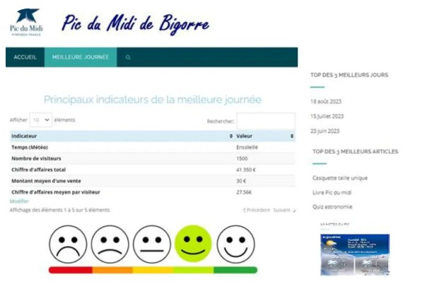
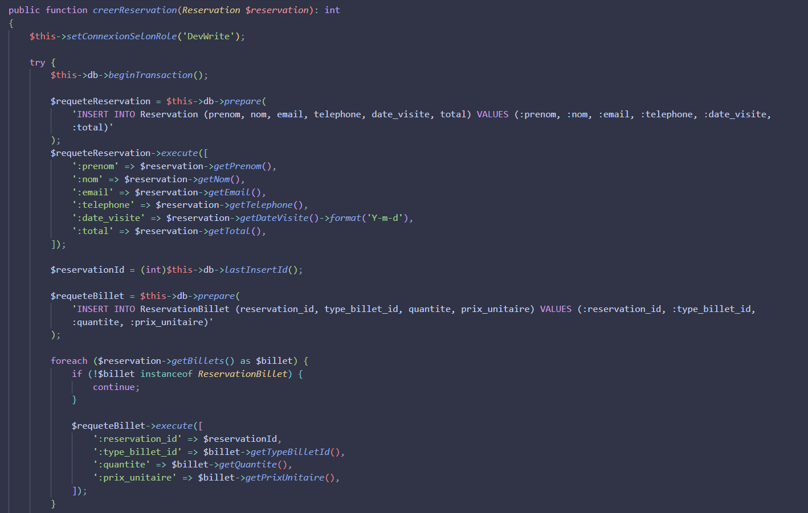
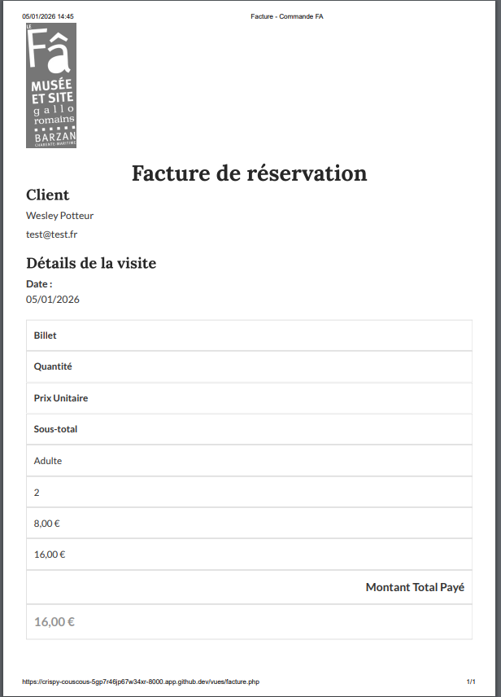

Projets Vus en Cours
Tableau de Bord - Pic du Midi
Développement d'un dashboard pour visualiser les indicateurs clés (météo, CA, visiteurs).

Affichage des indicateurs de performance clés : météo, nombre de visiteurs, chiffre d'affaires total et moyen par visiteur via des graphiques dynamiques avec Chart.js.
Projet DAO (Data Access Object)
Développement d'un modèle d'accès aux données en Java (Pattern DAO).
Ce projet sépare la logique métier de la logique d'accès à la base de données (MySQL) en utilisant un design pattern pour gérer les opérations CRUD de manière propre et maintenable.
Billetterie du Fâ - PHP/MVC
Application complète de réservation de billets avec architecture MVC, base de données et génération de PDF.
1. Contexte & Besoin
Le site archéologique du Fâ (Barzan) fait face à une forte affluence estivale. L'objectif était de
développer une application web pour fluidifier la gestion des entrées en permettant la
réservation en ligne.
Contraintes : Travail en méthode SCRUM, PHP 8 sans framework, Architecture MVC imposée.
2. Architecture & Choix Techniques
- Langage : PHP 8 (Typage fort, Attributs).
- Architecture : MVC (Modèle-Vue-Contrôleur) pour séparer la logique et l'affichage.
- Accès Données : Pattern DAO avec PDO pour sécuriser les requêtes SQL.
- Sécurité : Hashage des mots de passe, protection XSS/Injection SQL.
📁 Structure du projet (MVC)
- site
- controleurs
- images
- JS
- modeles
- polices
- style
- vues
- configBdd.php
- index.php
- process-confirmation.php
- README.md
3. Fonctionnalités Clés
A. Sélection des billets (Front-End)
Formulaire dynamique permettant de choisir le type de visite et la quantité de billets. Le total se met à jour en temps réel.

B. Validation et Enregistrement (Back-End)
Réception des données dans le contrôleur, validation des entrées, et insertion en base de données via le DAO. Utilisation de transactions SQL.

C. Confirmation et Facture PDF
Une fois la commande validée, l'utilisateur reçoit un récapitulatif et peut télécharger sa facture générée dynamiquement avec la librairie FPDF.


Projets Personnels
Développement Modulaire FiveM (Lua/NUI)
Création de scripts avancés (Autopilot, Lecteur Multimédia, Events) avec communication Client-Serveur et interfaces Web (NUI).
1. Contexte & Objectifs
Dans le cadre de l'amélioration de l'expérience utilisateur (UX) sur un serveur Roleplay, j'ai développé une
suite de scripts modulaires indépendants.
Objectif : Automatiser des tâches répétitives (conduite) et intégrer du contenu web externe
(YouTube) directement dans le moteur du jeu.
2. Architecture Technique
- Langage : LUA (Logique métier) & JavaScript (Interfaces).
- Architecture : Client-Serveur (OneSync) avec gestion d'événements (NetEvents).
- Interface (NUI) : HTML/CSS injecté dans le moteur de rendu Chromium de FiveM.
- Persistance : Utilisation des KVP (Key-Value Pairs) pour sauvegarder les données joueurs localement.
📁 Structure des ressources
- resources
- autopilot // Système de conduite
autonome
- client.lua
- config.lua
- fxmanifest.lua
- minitv // Intégration API YouTube
- html
- index.html
- script.js
- server.lua
- html
- autopilot // Système de conduite
autonome
3. Fonctionnalités Clés
A. Algorithme de proximité (Autopilot)
Le script calcule dynamiquement le point d'intérêt le plus proche (ex: Station essence) en comparant les vecteurs de coordonnées du joueur avec une liste de configuration.
local function getClosestVec3(list)
local playerCoords = GetEntityCoords(PlayerPedId())
local minDist, closest = nil, nil
for _, coords in ipairs(list) do
local dist = # (playerCoords - coords) -- Calcul vectoriel
if not minDist or dist < minDist then
minDist = dist
closest = coords
end
end
return closest, minDist
endB. Communication NUI & API YouTube (MiniTV)
Intégration de l'iframe API YouTube via une page web transparente superposée au jeu. Le serveur envoie l'URL, et le JS extrait l'ID vidéo via Regex.
- Extraction d'ID vidéo via Regex JS.
- Synchronization lecture/pause entre tous les joueurs via événements serveur.
- Overlay CSS dynamique (Coin ou Plein écran).